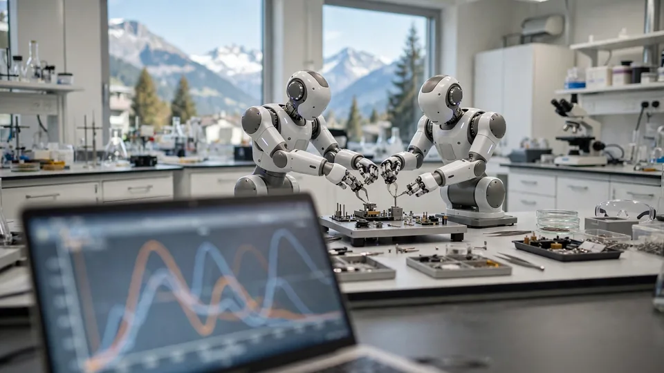

Enact exits stealth with a $30M pre-seed to teach robots to feel — Yann LeCun and Mistral’s Arthur Mensch back the bet
- Who: Enact Intelligence, a Zurich physical-AI startup founded in March 2026 by CEO Manuel Yves Galliker, who previously led the software team for 1X’s NEO humanoid and worked at the robotics lab Physical Intelligence. The 12-person team draws talent from DeepMind, 1X, Amazon Robotics, Helsing and ETH Zurich.
- What/when: the company emerged from stealth on October 22, 2026 with a $30M (€26.68M) pre-seed round — described as one of the largest pre-seed raises in Europe to date.
- The tech: force-and-touch dexterity via a “proprioceptive nervous system” and cortex that sense force in real time through the robot’s existing actuators — no fragile sensors, no extra hardware — working across form factors from robotic arms to humanoids.
- The money: redalpine, Notion Capital and firstminute capital, plus angels Yann LeCun, Mistral founder Arthur Mensch, Path Robotics founder Andrew Lonsberry, Hugging Face’s Thomas Wolf, and others.
- The plan: expand the team and accelerate hardware and R&D, hiring across robotics, AI research, mechanical engineering and infrastructure; Philip Kneis, a former redalpine deeptech investor, joins to lead growth.
Enact Intelligence emerged from stealth on Thursday, announcing a $30 million (€26.68 million) pre-seed round — described as one of the largest pre-seed raises in Europe to date — to teach robots dexterity through force and touch. The Zurich physical-AI startup, founded in March 2026 by CEO Manuel Yves Galliker, argues that most robots today perceive the world almost entirely through cameras, which leaves them unreliable at fine manipulation. Enact’s answer is what it calls a “proprioceptive nervous system” and a cortex that senses force in real time through the robot’s own actuators — no fragile fingertip sensors, no extra hardware.
Feel first, see second
The technical claim is that force and touch feedback lets robots learn fine manipulation tasks more efficiently and execute them faster. Enact says it is rethinking the full stack: “We’re rethinking the full stack, from model architectures enabling multi-frequency and multi-scale intelligence, to the data pipelines all the way down to the actuators and sensors that feed the model,” Galliker said. Instead of collecting everything from scratch, the company builds on existing AI models — “Unlike the early days of LLMs, physical AI has the advantage of starting from strong reasoning, language, and vision capabilities already in place. Instead of trying to collect every piece of data needed to teach a robot common sense about the world, we can build on top of existing models, like video models, and adapt them to output robot actions for interacting with the real world,” he told EU-Startups. The company says the technology works across every form factor, from a simple robotic arm to a humanoid, is built for real-world deployment from day one, and targets tasks where value comes from handling variation — delicate assembly, fitting, plugging — rather than repeating the same high-volume motion.
The money behind the bet
The round was backed by redalpine, Notion Capital and firstminute capital, with a high-profile angel slate: Yann LeCun (founder of AMI Labs and Meta’s former chief AI scientist), Arthur Mensch (founder of Mistral), Andrew Lonsberry (founder of Path Robotics) and Hugging Face’s Thomas Wolf — plus, per the company’s announcement, Paolo Cerruti of Northvolt, ETH Zurich professors Marc Pollefeys and Thomas Hofmann, Wingtra’s Elias Kleimann, and former J.P. Morgan executive Ameet Patel. redalpine’s Dr. Harald Nieder framed the thesis: “Dexterity is the next frontier in robotics, and Enact is tackling it with a new data modality: starting with high precision force data from bespoke actuators they are rethinking the entire stack from the hardware up. We are very excited about Enact’s approach of leveraging orthogonal data to improve existing models and build a data moat”. Notion Capital’s Kamil Mieczakowski put it more plainly: “Robots won’t generalise until they have a nervous system, one that lets them not only see the world but feel it.”

The founder and the Zurich play
Galliker previously led the software team for the 1X humanoid robot NEO, helped build 1X’s AI team in Silicon Valley, and then worked at the robotics lab Physical Intelligence. Enact’s twelve-person team draws engineering talent from DeepMind, 1X, Amazon Robotics, Helsing, Physical Intelligence and ETH Zurich; alongside the raise, the company announced that Philip Kneis, a former deeptech investor at redalpine, is joining to lead growth. Building in Zurich over the Bay Area was deliberate: “Silicon Valley has traditionally been very strong in software and AI, but it’s lacking in robotics and hardware engineering talent, and with the current excitement around robotics a lot of money is chasing a few people. What we will do is bring the AI experience with us from Silicon Valley and combine it with Zürich’s local talent pool. That’s the winning formula”, Galliker said. The funds go to expanding the team and accelerating hardware and R&D, with openings spanning robotics integration, controls, mechanical engineering, AI research and infrastructure.
Why this round matters
Investors keep writing bigger early checks for physical AI, and $30M for a pre-seed says the field’s center of gravity is moving from chatbots to the factory floor. The bet is that dexterity — not another point on a vision benchmark — is the bottleneck between demos and deployment. If Enact’s actuator-read force sensing holds up at industrial scale, “feel” becomes the next data moat after text, images and video.
Frequently asked questions
What is Enact Intelligence building?
A “proprioceptive nervous system” and cortex that gives robots whole-body force and touch awareness by reading signals from their own actuators in real time — no fragile sensors, no extra hardware — so they can learn fine manipulation tasks more efficiently and perform them faster.
Who’s backing the $30M pre-seed round?
redalpine, Notion Capital and firstminute capital led the round, with angels including Yann LeCun, Mistral founder Arthur Mensch, Path Robotics founder Andrew Lonsberry, and Hugging Face’s Thomas Wolf.
Who founded Enact, and why Zurich?
Manuel Yves Galliker, who previously led the software team for the 1X humanoid robot NEO and worked at the robotics lab Physical Intelligence. He chose Zurich over Silicon Valley for its robotics and hardware engineering talent, pairing it with AI experience from the Bay Area; the 12-person team includes people from DeepMind, 1X, Amazon Robotics, Helsing and ETH Zurich.